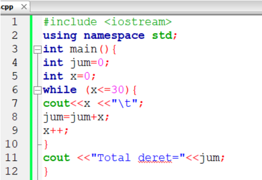
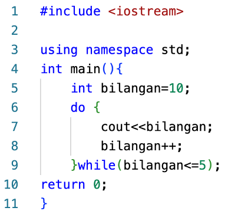
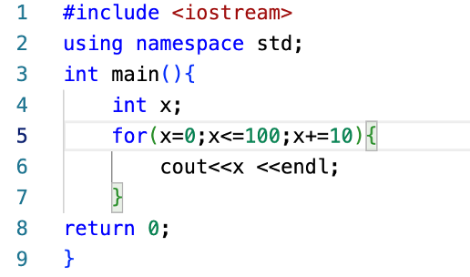
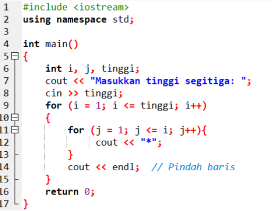

JOBSHEET 5
Judul Praktikum
Struktur Kontrol Perulangan
Tujuan Praktikum
- Memahami dan menerapkan pernyataan WHILE
- Memahami dan menerapkan pernyataan DO WHILE
- Memahami dan menerapkan pernyataan FOR
- Memahami dan menerapkan pernyataan NESTED LOOP
Praktikum
Praktikum 5.1 (While)
Deskripsi dan langkah-langkah praktikum while loop.

Praktikum 5.2 (Do While)
Deskripsi dan langkah-langkah praktikum do while loop.

Praktikum 5.3 (For)
Deskripsi dan langkah-langkah praktikum for loop.

Praktikum 5.4 (Nested Loop)
Deskripsi dan langkah-langkah praktikum nested loop.
